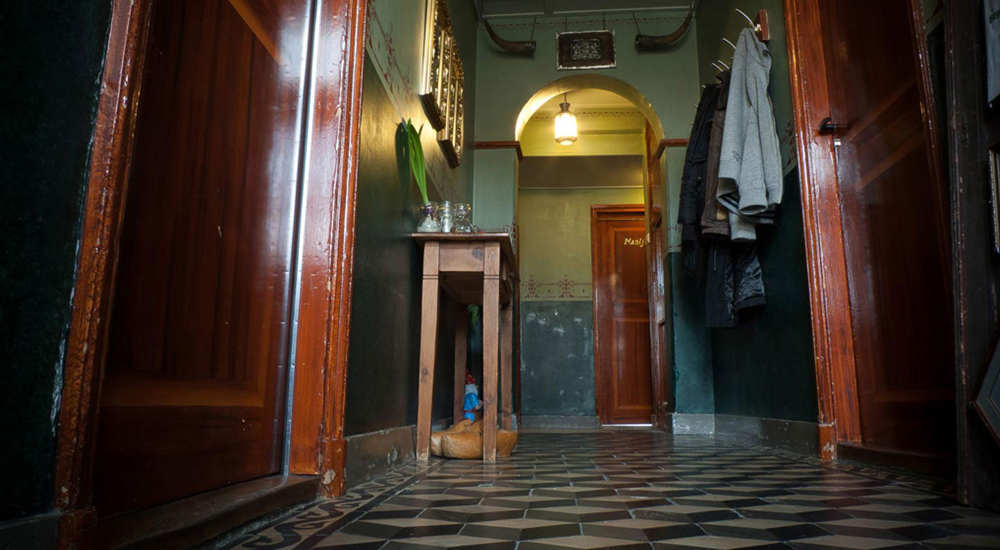

Welkom bij Herbergh Het Wapen van Friesland
Ons pand, gelegen aan het mooiste plein van Friesland en in het hart van de Greidhoeke, heeft een lange geschiedenis. Eschertegels in de gang, een bovenzaal met historie en een muurschildering waar je even voor blijft staan. Alles echt Fries, maar toch ook met een Frans sfeertje.
De sfeervolle gelagkamer dateert uit de jaren ’60 en dat is nog steeds goed te zien. Een klein museum, overal vind je wel iets van vroeger. Lekker eten in een nostalgische omgeving met de service anno nu is ons streven. We hopen dat u ervan geniet.
Jasper, Karin en team
- 1511
De boeken gaan terug tot 1511, toen Ulba Tapper als herbergier „op de Terp van Littens” werd genoemd.
- 1887
De socialistische voorman Troelstra op de bovenzaal.
- 1947
De prachtige muurschildering die het café, de kerk en het plein uit de 18e eeuw verbeeldt. Inspiratiebron voor velen.
- jaren ’60
Uit deze tijd dateert de gelagkamer, en dat is nog steeds goed te zien.
